대표 경험
통합 관리 플랫폼 · 현장 안전 기록 · 비용·인원 대시보드
B2B 업무 서비스의 정보 구조와 UX/UI를 설계하고, HTML·CSS·SCSS 퍼블리싱까지 연결하는 디자이너 이한울입니다.
통합 관리 플랫폼 · 현장 안전 기록 · 비용·인원 대시보드
정보 구조 → 화면 설계 → 퍼블리싱
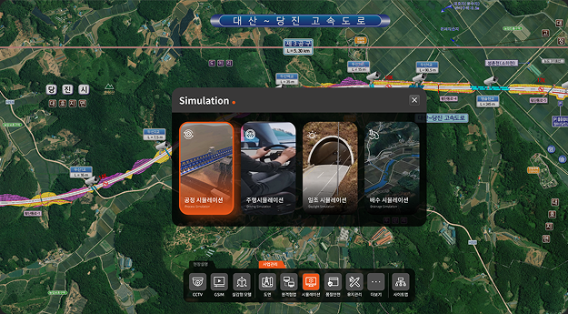
2022년 12월부터 B2B 업무 서비스의 정보 구조·화면 설계·퍼블리싱을 담당했습니다. 이전에는 기업·브랜드 웹사이트의 UI와 반응형 화면을 제작했습니다.
B2B 플랫폼·ERP·모바일 업무 서비스의 UX/UI 설계 공통 UI 기준과 HTML·CSS·SCSS 퍼블리싱
기업·브랜드 웹사이트 UI 제작 반응형 화면 설계와 퍼블리싱 참여
정보 구조 · 화면 흐름 · UI 디자인 · 퍼블리싱 Figma · HTML · CSS · SCSS · JavaScript · Photoshop
배포된 플랫폼과 현장 기록 서비스를 먼저 소개합니다. 이어서 ERP 설계·퍼블리싱과 공통 UI 재사용 경험을 보여드립니다.
지도와 공통 메뉴로 현장 자료 탐색 · 배포 후 실사용
종이 일지를 웹·모바일 입력으로 전환 · 배포 후 실사용
조회 범위와 대시보드 설계 · 웹 설계안 최종 미사용
컬러 토큰·SCSS·일부 UI 요소 재사용
팀 내부 모바일 설계 · 개인 칸반 프로토타입
현장·본사·외부 사용자가 필요한 자료를 찾도록 공통 메뉴와 지도 중심 화면을 설계했습니다. 정보 구조·UI·퍼블리싱을 담당했으며, 배포 후 실제 사용자가 이용했습니다.
2023.01–2023.12
사용자 목적 정리 · 정보 구조 · UI · 퍼블리싱 · 기획 참여
개발자 · 기획자 · 엔지니어와 협업 배포 후 실사용 · 전시 활용
현장·본사·외부 사용자는 같은 자료도 서로 다른 목적으로 확인했습니다. 파일과 프로그램별로 나뉜 자료를 업무 단위로 묶는 것을 설계 과제로 삼았습니다.
공정·자원·보상·현장 자료를 파일과 프로그램에서 각각 찾아 확인
공정과 현장 위치에 관련된 정보 확인
공정·자원·보상 관리 현황 확인
프로젝트 현황과 시각화 자료 확인
공통 메뉴에서 업무를 선택하고 지도와 관련 자료를 이어서 확인
공통 메뉴를 현장 설명과 사업 관리로 나누고, 관련 기능으로 접근하도록 구성했습니다. 아래 기능은 현재 캡처에서 확인되는 메뉴 항목입니다.
현장 설명 / 사업 관리
CCTV · GSIM · 실감형 모델 · 도면 · 원격협업 시뮬레이션 · 품질안전 · 유지관리 · 더보기 · 사이트맵
업무별 자료 분류 · 공통 메뉴의 정보 구조 · 지도와 관련 정보의 탐색 UI
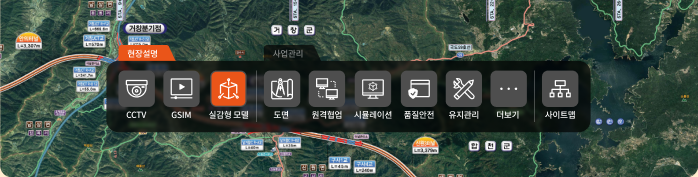
현재 캡처의 탭: 현장설명 · 탭별 전체 메뉴는 원본 확인 후 보강
지도로 공정 구간과 현장 위치를 확인하고, 하단 메뉴에서 업무를 선택하도록 구성했습니다. 시뮬레이션을 선택하면 관련 자료 유형을 확인할 수 있습니다.
공정 구간과 현장 위치를 확인하는 배경
시뮬레이션 등 필요한 기능으로 이동하는 진입점
공정·주행·일조·배수 시뮬레이션 항목 확인
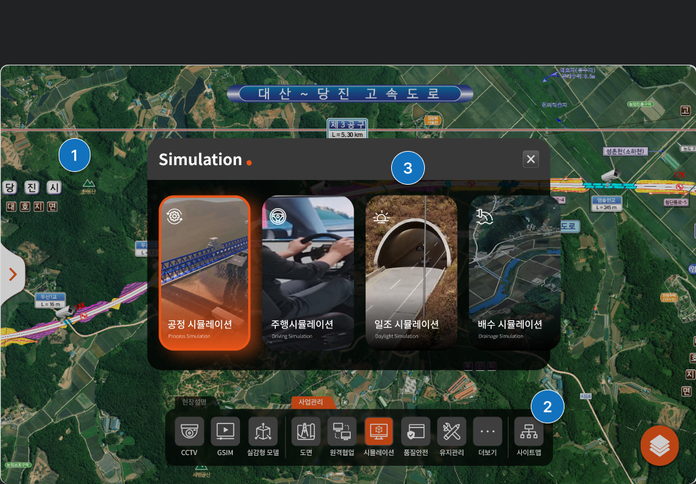
흰색·검정·반투명 검정 메뉴를 검토했습니다. 메뉴의 구분과 지도 배경의 연속성을 함께 고려해 반투명 검정안을 선택했습니다.
메뉴 경계는 선명하지만 지도와 분리되어 보임
메뉴 영역의 존재감이 강하게 드러남
메뉴를 구분하면서 지도 배경의 연속성을 고려
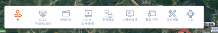
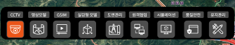
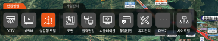
당시 화면은 메뉴 구성·활성 상태가 다릅니다. 시각 검토에 따른 선택입니다.
도면·영상·3D 자료의 유형과 화면 메뉴를 대응해 정리했습니다. 이 페이지는 자료 탐색을 위한 정보 구조와 UI 구성을 보여줍니다.
도면 메뉴로 접근
시뮬레이션 메뉴에서 자료 유형 확인
실감형 모델 메뉴로 접근
자료 분류 · 정보 구조 · UI · 퍼블리싱
공통 메뉴·지도 중심 탐색 UI를 설계하고 HTML·CSS·SCSS로 퍼블리싱했습니다. 관련 직군과 정보 범위와 UI 기준을 조율했으며, 배포된 플랫폼은 실제 사용자가 이용했습니다.
업무별 자료 분류 지도와 관련 정보의 탐색 UI HTML·CSS·SCSS 퍼블리싱
배포 후 실제 사용자 이용 프로젝트 시연과 내부 소통에 산출물 활용
개발자·기획자·엔지니어와 정보 범위와 UI 기준 조율
작업 전 안전 점검을 기록하는 TBM 일지를 디지털 입력 화면으로 설계했습니다. 웹은 기록 보관과 판독 문제에 대응하고, 모바일은 현장 작성을 지원하도록 구성했습니다.
2025.11–2026.04
모바일 기획·디자인 · 웹 UI 참여
개발자와 협업 배포 후 실제 사용자 이용
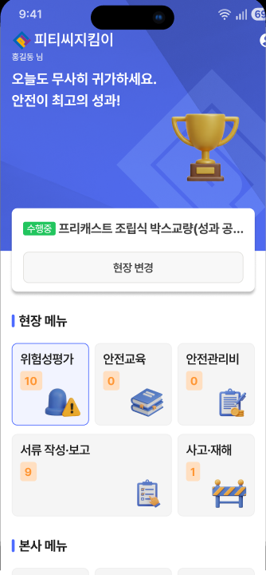
종이 일지는 보관 중 분실·변색될 수 있고 손글씨를 읽기 어려울 수 있었습니다. 웹에는 기록을 입력하고 보관하는 구조를, 모바일에는 현장에서 작성하는 화면을 설계했습니다.
분실·변색 위험에 대응할 디지털 기록
손글씨 대신 내용을 입력하는 항목
모바일에서 일지를 작성하는 화면
작업일 · 작업 내용 · 위험 요인 · 확인 항목 · 참여자 서명
기존 기록 항목 요약 · 제출용 종이 일지 이미지는 익명화 후 교체
일지의 날짜와 출역 인원, 담당·소장 확인 상태, 근로자 확인 항목을 모바일 화면에 배치했습니다. 하단의 작성하기 버튼으로 다음 입력 단계에 진입하도록 구성했습니다.
작성일과 금일 출역 인원 확인
담당과 소장의 확인 표시 및 액션
근로자 확인 항목과 작성하기 버튼
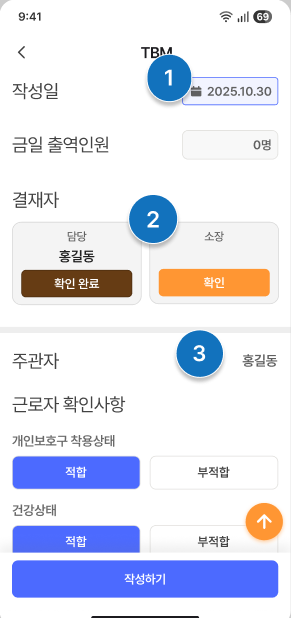
현재 UI 날짜 2025.10.30 · 작업기간과의 관계 확인 필요
마이페이지에서 서명을 입력하거나 변경하고 저장하도록 구성했습니다. 저장 후에는 완료 메시지를 표시해 처리 결과를 확인할 수 있게 했습니다.
서명 영역 · 지우기 · 저장 버튼
서명이 저장 되었습니다. 메시지 · 닫기 버튼
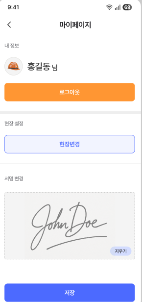
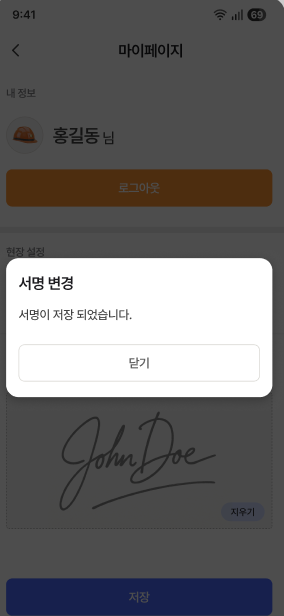
마이페이지 서명 변경 화면 · 입력과 성공 상태
모바일 기획·디자인과 웹 UI에 참여하고 개발자와 협업했습니다. 서비스는 배포 후 실제 사용자가 이용했으며, 사용자 의견은 개발자를 통해 전달받았습니다.
모바일 기획·디자인 웹 UI 참여 일지·서명 관련 화면
개발자와 협업한 서비스 배포 실제 사용자 이용
개발자를 통해 사용자 피드백 전달받음
전사·프로젝트·개인 범위에 따라 주요 수치와 상세 내역을 확인하는 UI를 설계하고 퍼블리싱했습니다. 제공 형식이 PDF로 변경되어 최종 웹 설계안은 사용되지 않았습니다.
2025.11–2026.04
조회 범위 · UX/UI · HTML·CSS·SCSS 퍼블리싱
개발자와 협업 PDF 제공으로 변경 · 웹 설계안 최종 미사용
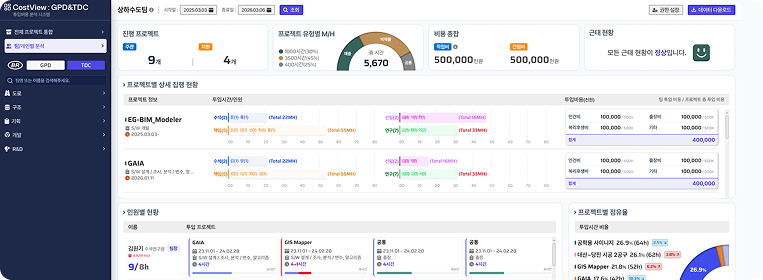
기존 자료의 비용·인원 항목을 대시보드의 주요 수치와 프로젝트·인원별 상세 영역에 배치했습니다. 아래 비교는 기존 자료와 웹 설계안의 정보 배치를 보여줍니다.
날짜 · 이름 · 직급 · 팀 · 프로젝트 · 투입 시간 · 비용 등 행 단위 기록
조회 조건 → 주요 수치 요약 → 프로젝트·인원별 상세
기존 자료와 웹 설계안의 구조 비교 최종 웹 설계안은 미사용
기존 항목과 웹 설계안의 정보 배치 비교 · 웹 설계안 최종 미사용
여러 프로젝트의 현황, 특정 프로젝트의 상세, 본인과 관련된 업무를 구분했습니다. 조회 조건을 정한 뒤 주요 수치와 상세 내역을 확인하는 순서로 구성했습니다.
여러 프로젝트의 비용·인원 현황
선택한 프로젝트의 수치와 상세 내역
본인과 관련된 업무 정보
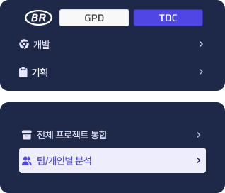
조건 설정 → 주요 수치·현황 요약 → 프로젝트·인원별 상세
현재 조회 범위와 합계, 기준을 넘은 투입 시간을 구분하도록 UI를 설계했습니다. 상태 색상과 수치 강조, 요소 간격을 개발자와 공유하고 웹 화면을 퍼블리싱했습니다.
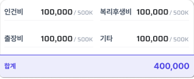
선택한 조회 범위를 강조 비용 항목과 합계를 구분
투입 시간 9/8h 초과근무 1시간 표시
상태 색상 · 수치 강조 · 요소 간격 공유 HTML·CSS·SCSS 퍼블리싱 최종 웹 설계안 미사용
9/8h와 초과 1시간은 화면의 예시값 · 웹 설계안 최종 미사용
컬러를 토큰과 SCSS로 관리해 프로젝트마다 사용했습니다. 입력·라디오·체크박스 등 일부 UI 요소는 화면에 맞춰 크기를 조정해 사용하고, 웹 가이드로 정리했습니다.
공통 UI 기준 · 가이드 설계 · SCSS 컬러 토큰 관리
디자이너의 디자인·프론트 작업
컬러와 일부 UI 요소
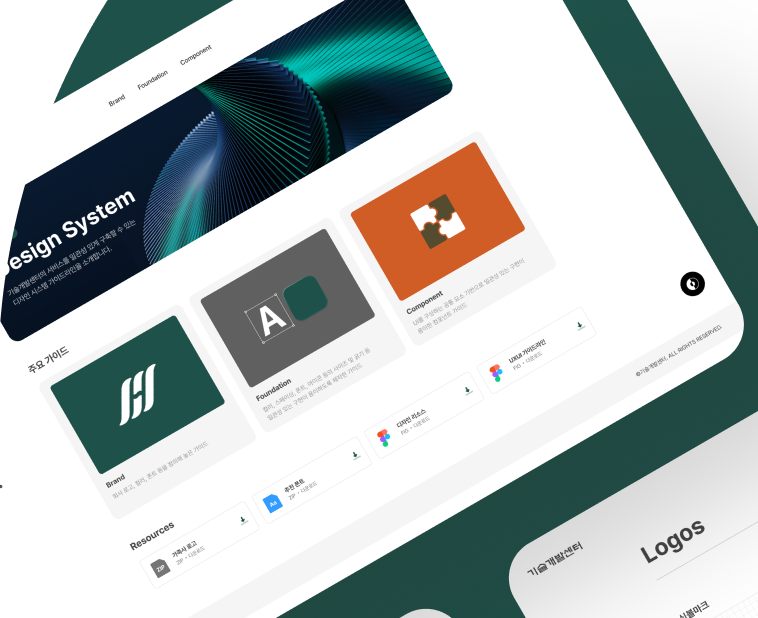
공통 컬러 값을 SCSS 변수로 정의하고 웹 가이드에 같은 색상 기준을 정리했습니다. 컬러 토큰은 프로젝트의 디자인·프론트 작업에서 반복 사용했습니다.
_variables.scss의 컬러 변수 정의
Primary·Secondary 색상 단계 정리
디자이너의 프로젝트 디자인·프론트 작업
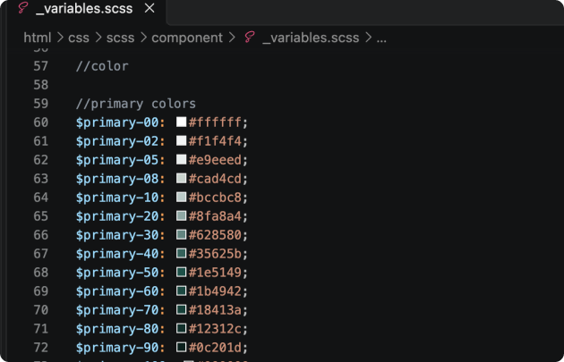
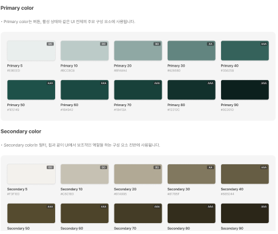
현재 증거: 컬러 변수 정의 + 웹 가이드 · 실제 스타일 참조 자료는 보강 필요
입력 UI의 상태 예시와 읽기 전용·편집 상태의 스타일을 정리했습니다. 일부 요소를 크기 조정해 사용한 경험은 실제 프로젝트 적용 자료와 함께 설명할 수 있습니다.
테이블·목록 안의 입력·텍스트 영역 스타일 읽기 전용 · 편집 상태 정의
기본 입력과 라벨·설명문이 있는 입력 예시
입력·라디오·체크박스 일부 요소의 크기를 조정해 사용
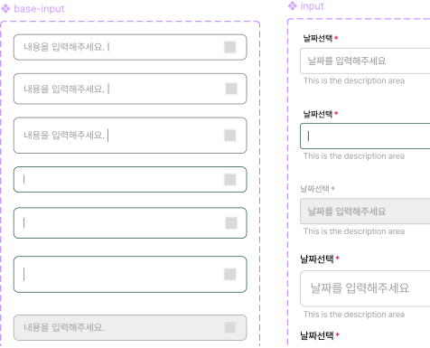
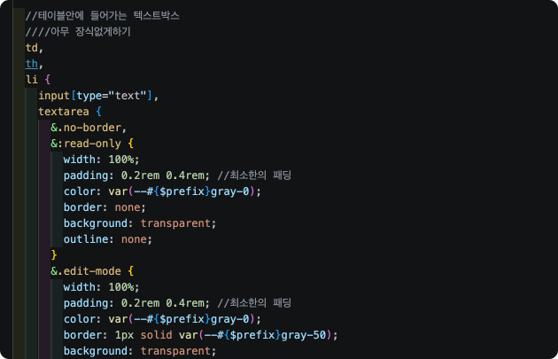
현재 증거: 입력 가이드 + 일부 SCSS · 크기 조정 적용 UI는 보강 필요
기본·포커스·입력 중·비활성 상태를 구분하고 검색 입력의 배치 예시를 웹 가이드에 정리했습니다. 상태 이름과 예시 설명을 실제 화면에 맞춰 작성했습니다.
기본 · 포커스 · 입력 중 · 비활성
검색 입력의 상태별 모양 검색창을 화면 안에 배치하는 예시
파운데이션 · 컴포넌트 · 사용 가이드 설계
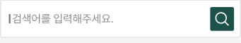
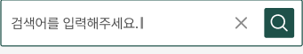
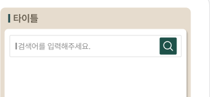
현재 UI에서 보이는 네 상태 · 원본 가이드의 상태 라벨도 수정 필요
디자이너 팀에서 모바일 인트라넷의 기획·UI·퍼블리싱에 참여했습니다. 회의실 현황에서 예약으로, 전자결재 현황에서 근태 신청으로 이어지는 화면을 구성했습니다.
공간 현황 확인 → 예약일·시간·목적 입력
문서 상태 확인 → 근태 종류·일자·사유 입력
미배포 · 디자이너 팀 내부 설계·구현 확인
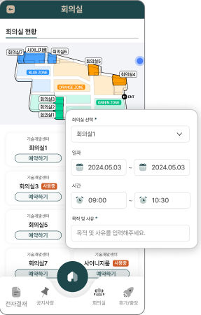
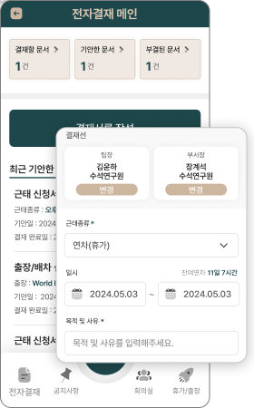
팀 내부 설계·구현 확인 · 미배포
이미지와 제목으로 작업을 구분하는 보드 UI를 설계했습니다. AI의 도움을 받아 카드 이동과 작업 입력을 구현했으며, 실제 사용자 평가는 진행하지 않았습니다.
카드의 이미지·제목으로 작업 구분 카드 이동 인터랙션 구현
제목 · 설명 · 담당자 · 상태 · 일정 입력
개인 UX/UI 설계 · AI 보조 구현 시연 데이터 사용 · 사용자 평가 미실시
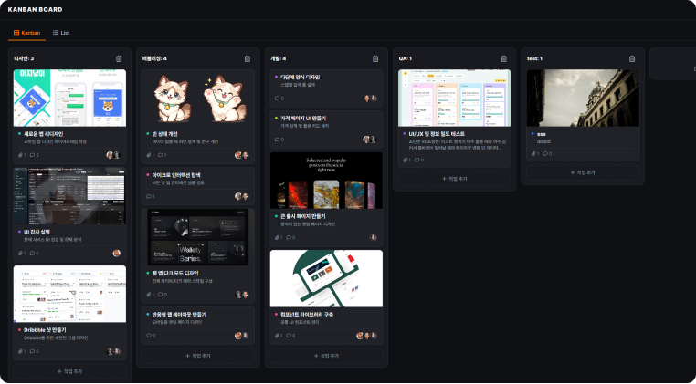
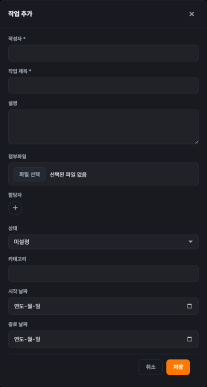
시연 데이터 · 사용자 평가 미실시 · test/sss/ddddd는 재캡처 전 수정 필요
B2B 업무 서비스의 정보 구조·UX/UI·퍼블리싱 경험을 바탕으로 제품의 사용 흐름을 함께 만들고 싶습니다. 프로젝트의 담당 범위와 설계 과정은 면접에서 자세히 말씀드리겠습니다.
UX/UI · Product Designer